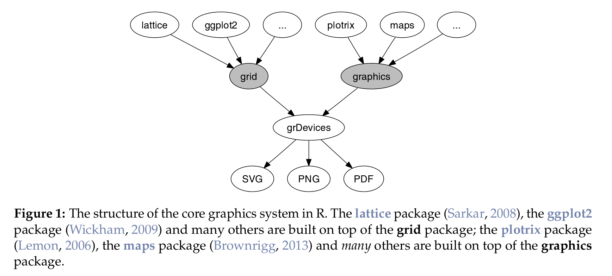

Data visualization in R
We do love creating plots with R and we think R offers a fantastic set of tools to make beautiful graphics. Many websites and blog posts show what you can be capable with R. Have a look at what Gaston Sanchez created and The R graph Gallery developed by Yan Holtz. The power is even more with all the package that take advanage from the JS ibrabry, for instance plotly, DiagrammR, NetworkD3, Wordcloud2, etc.
There are many many different solutions to create graph see our wiki page on this topic. Some prefer to use base plots some other prefer to use ggplot and in some context it could be very valuable to use interactive plot such the one that can be drawn with packages that actually turn your R code into a JS code.
Setting apart web-based graphics, core graphics feature is two fold: the grid system and the graphics system, both are core packages. We took the image below from Paul Murrell’s paper presenting a package making the a partial conversion from the two core package.

To illustrate how to start a plot from the scratch and ready to be further customized we will produce an empty plot with ten points whose coordinates will be (0:10, 0:10).
graphics-based plots
We think that when using graphics the need for emptying your plot is strong if you intend at creating a empty plot. When using graphics you cannot refresh the viewer and update it unless you re-execute all the lines. Therefore to cutomize easer if you start with and emply plot
plot(0:10, 0:10)

To empty it
plot(0:10, 0:10)

if you have a careful look at the code behind plot.default() (the one we actually call here) you will concclure
grid-based plots
It is less clear what you should do when you are using
https://stat.ethz.ch/R-manual/R-devel/library/grid/doc/grid.pdf
https://journal.r-project.org/archive/2015/RJ-2015-012/index.html
Before starting a plot actually to customized, remove everything you need…
easy to make your own function
from that to that easier to add something rather that fixing everything and when extremely customized see explicitely what desired.
So… Let’s use a basic plot and wrote every single peace of code we need.
Note we also made a function for that available here …
It could be a bit different
There are various way of doing an emply plot, If you google empty plot and R you should end uo in Stack over flower with different answers that are actually all goodé https://stackoverflow.com/questions/4785657/r-how-to-draw-an-empty-plot
Let’s review some of them
plot.new()
pushViewport(vp) grid.rect(gp=gpar(fill=“grey”))
This is something I used a lot to start a new plot but also I like using here is the duncion I used.
in my package
We mostly often do graphics-based plots and so we often do the same combination. Therefore, we created a function plot0() in our package graphicsutils available on . We add few extra parameters make it easier.
install_github("inSileco/graphicsutils")
library(graphicsutils)
plot0(c(0,10))
points(1:9, 1:9)

plot0(c(0,10), fill='#ebebeb', grid.col = 'white')
points(1:9, 1:9)